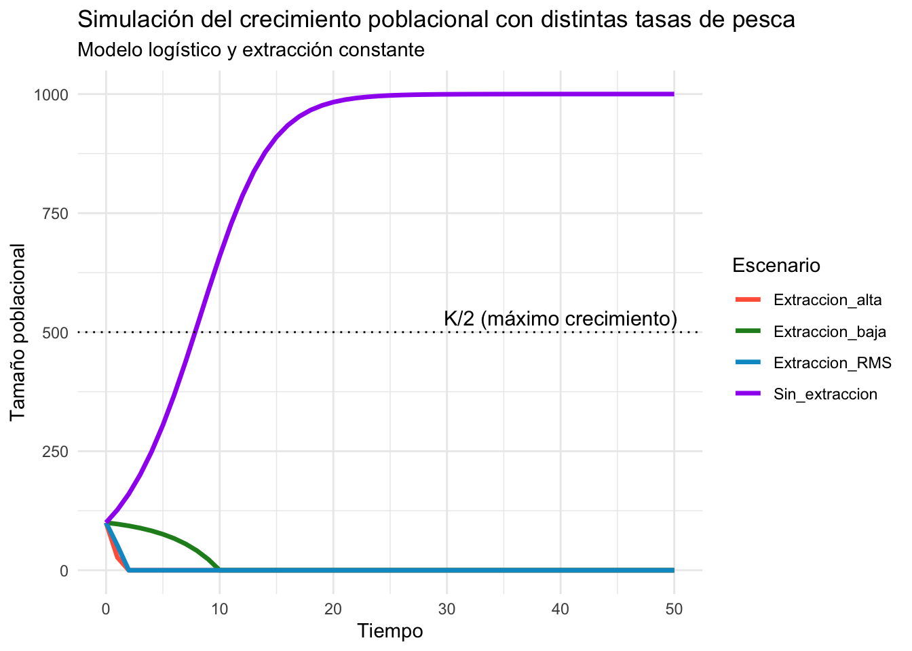

library(ggplot2)#Para graficar
library(tidyr)#Para ordenar
library(dplyr)#Para manejo de bases de datosModelo Logístico y Rendimiento Máximo Sostenible (RMS)
1 Introducción
En esta práctica modelaremos el crecimiento poblacional de una población de peces en una laguna de Alchichica usaremos el modelo logístico y calcularemos el Rendimiento Máximo Sostenible (RMS). El RMS nos indica cuál es la tasa máxima de extracción (pesca) que permite mantener la población sin colapsar a largo plazo.
2 Librerías
3 1. Parámetros del modelo
# Parámetros del modelo logístico
r <- 0.3 # tasa intrínseca de crecimiento
K <- 1000 # capacidad de carga
N0 <- 100 # población inicial
# Tiempo de simulación
time <- seq(0, 50, by = 1)#define 51 unidades de tiempo (de 0 a 50) 4 2. Modelo de crecimiento logístico
Es un modelo matemático que describe cómo una población crece de manera acelerada al principio (cuando hay pocos individuos y muchos recursos), pero se estabiliza al acercarse a la capacidad de carga del ambiente (K), debido a la competencia por recursos.
Y se expresa de la siguiente forma:
\[ \frac{dN}{dt} = rN \left(1 - \frac{N}{K} \right) \]
Donde:
- ( N ): Tamaño poblacional en el tiempo ( t )
- ( r ): Tasa intrínseca de crecimiento
- ( K ): Capacidad de carga
La tasa de cambio de la población se representa con la siguiente expresión:
\[ \frac{dN}{dt} \]
Este modelo describe un crecimiento que comienza de forma exponencial pero se estabiliza cuando la población se acerca a la capacidad de carga del ambiente.
5 2.1 Creación de la función logistic_growth()
El objetivo de logistic_growth() es calcular la tasa de cambio poblacional (dN) en un momento dado según el modelo logístico de crecimiento. Este modelo considera que el crecimiento poblacional no es infinito, sino que disminuye conforme la población se acerca a la capacidad de carga del ambiente.
# 1. Definimos una función llamada logistic_growth que recibe tres parámetros:
# N = tamaño poblacional en el tiempo actual
# r = tasa intrínseca de crecimiento
# K = capacidad de carga del ambiente
# 2. Se calcula la tasa de cambio de la población (dN) usando la ecuación logística:
# dN/dt = r * N * (1 - N/K)
# Este valor representa cuánto cambiará la población en la siguiente unidad de tiempo
# 3. Se devuelve el valor calculado de dN
# Función logística de crecimiento poblacional
logistic_growth <- function(N, r, K) {
dN <- r * N * (1 - N / K)
return(dN)
}6 3. Simulación sin extracción
En esta sección el modelo logístico en R simula cómo cambia el tamaño de una población a lo largo del tiempo sin aplicar extracción o cosecha, es decir, sin eliminar individuos del sistema.
# Vector para almacenar la población
population <- numeric(length(time))
population[1] <- N0 #Cuando haces simulaciones dinámicas (como el modelo logístico), necesitas partir de un valor inicial conocido. Ese valor es el tamaño poblacional al inicio del tiempo simulado, en este caso, N0.
# Simulación de crecimiento sin pesca
# Bucle for que simula el crecimiento poblacional a lo largo del tiempo, aplicando el modelo de crecimiento logístico definido antes.
#1. Inicia un bucle que va desde t = 2 hasta el final del vector time (en este caso, t = 51, ya que time va de 0 a 50).
#for (t in 2:length(time)) {
#2. population[t] <- population[t - 1] + logistic_growth(population[t - 1], r, K)
#calcula el tamaño poblacional en el tiempo t, utilizando el valor anterior (t - 1) y aplicando la fórmula del modelo logístico.
#3.evita que la población supere la capacidad de carga K
# if (population[t] > K) population[t] <- K
for (t in 2:length(time)) {
population[t] <- population[t - 1] + logistic_growth(population[t - 1], r, K)
if (population[t] > K) population[t] <- K
}
print(population) [1] 100.0000 127.0000 160.2613 200.6346 248.7487 304.8105 368.3808 438.1838
[9] 512.0374 586.9939 659.7235 727.0701 786.6018 836.9596 877.8971 910.0552
[17] 934.6116 952.9455 966.3976 976.1396 983.1269 988.1034 991.6299 994.1199
[25] 995.8736 997.1064 997.9720 998.5791 999.0048 999.3031 999.5120 999.6583
[33] 999.7608 999.8325 999.8828 999.9179 999.9426 999.9598 999.9718 999.9803
[41] 999.9862 999.9903 999.9932 999.9953 999.9967 999.9977 999.9984 999.9989
[49] 999.9992 999.9994 999.9996Cada valor dentro del vector population es el tamaño poblacional proyectado en ese año.
Esto significa:
• En el año 0, había 100 individuos.
• En el año 1, la población aumentó a 127.
• En el año 2, aumentó a 160.26.A partir del año ~25-30, la población se estabiliza cerca de K = 1000 (ya no crece significativamente).
7 4. Cálculo del Rendimiento Máximo Sostenible (RMS)
El Rendimiento Máximo Sostenible (RMS) es un concepto central en la gestión pesquera. Representa la mayor cantidad de individuos que se puede extraer por unidad de tiempo sin comprometer la sostenibilidad de la población a largo plazo. Se basa en el supuesto de que la población alcanza su tasa máxima de crecimiento cuando su tamaño poblacional es igual a la mitad de la capacidad de carga del ambiente.
La fórmula del modelo de crecimiento logístico es:
\[ \frac{dN}{dt} = rN \left(1 - \frac{N}{K} \right) \]
Donde: - ( N ): Tamaño de la población - ( r ): Tasa intrínseca de crecimiento - ( K ): Capacidad de carga del ambiente - ( ): Tasa de cambio poblacional
El crecimiento máximo ocurre cuando ( N = ). Sustituyendo este valor en la ecuación:
\[ \frac{dN}{dt} = r \cdot \frac{K}{2} \left(1 - \frac{1}{2} \right) = \frac{rK}{4} \]
Por lo tanto, el RMS se calcula con:
\[ RMS = \frac{rK}{4} \]
Este valor indica la cantidad óptima de individuos que pueden extraerse sin agotar la población.
# Fórmula RMS = (r * K) / 4
RMS <- (r * K) / 4
cat("Rendimiento Máximo Sostenible (RMS):", RMS)Rendimiento Máximo Sostenible (RMS): 75🐟 Interpretación del RMS = 75
Puedes extraer hasta 75 individuos por unidad de tiempo sin poner en riesgo la sostenibilidad de la población.
Este valor representa el máximo rendimiento promedio que se puede sostener indefinidamente bajo condiciones ecológicas constantes, sin que la población decline.
8 5. Simulación con extracción constante
La función simular_con_pesca() simula la dinámica de una población que crece según el modelo logístico pero que además sufre una extracción constante (F) en cada unidad de tiempo. Esta extracción representa la pesca o cosecha constante.
# Función de simulación con pesca (extracción constante)
simular_con_pesca <- function(N0, r, K, F, time) {
N <- numeric(length(time))
N[1] <- N0
for (t in 2:length(time)) {
crecimiento <- logistic_growth(N[t - 1], r, K)
N[t] <- N[t - 1] + crecimiento - F
if (N[t] < 0) N[t] <- 0
if (N[t] > K) N[t] <- K
}
return(N)
}Este paso simula la dinámica poblacional cuando, además del crecimiento natural según el modelo logístico, se resta una cantidad fija de individuos (la cosecha) en cada ciclo temporal.
🎣 Tres escenarios de pesca
A continuación se muestran tres escenarios simulados de extracción pesquera con diferentes tasas constantes (F):
| Variable | Valor | Interpretación |
|---|---|---|
F_bajo |
30 | Pesca baja → la población crece y se estabiliza |
F_optimo |
RMS | Pesca óptima → corresponde al Máximo Rendimiento Sostenible (RMS) |
F_alto |
100 | Pesca alta → puede llevar al colapso poblacional |
# Simulamos con diferentes tasas de extracción
F_bajo <- 30
F_optimo <- RMS
F_alto <- 100
pop_bajo <- simular_con_pesca(N0, r, K, F_bajo, time)
pop_optimo <- simular_con_pesca(N0, r, K, F_optimo, time)
pop_alto <- simular_con_pesca(N0, r, K, F_alto, time)
print(pop_bajo) [1] 100.00000 97.00000 93.27730 88.65029 82.88772 75.69292 66.68197
[8] 55.35262 41.03923 22.84574 0.00000 0.00000 0.00000 0.00000
[15] 0.00000 0.00000 0.00000 0.00000 0.00000 0.00000 0.00000
[22] 0.00000 0.00000 0.00000 0.00000 0.00000 0.00000 0.00000
[29] 0.00000 0.00000 0.00000 0.00000 0.00000 0.00000 0.00000
[36] 0.00000 0.00000 0.00000 0.00000 0.00000 0.00000 0.00000
[43] 0.00000 0.00000 0.00000 0.00000 0.00000 0.00000 0.00000
[50] 0.00000 0.00000• Inicio (valor 100): la población empieza en 100 individuos (N0 = 100).
• Luego, cada año (o unidad de tiempo), se aplica el modelo logístico y se restan 30 individuos debido a la pesca.
• Esto hace que la población disminuya progresivamente.
• En el año 11, la población llega a 0.
• A partir de ahí, se mantiene en cero: es decir, la población colapsó por sobreexplotación.9 6. Visualización con ggplot2
# Construimos un data frame para graficar
df <- data.frame(
tiempo = time,
Sin_extraccion = population,
Extraccion_baja = pop_bajo,
Extraccion_RMS = pop_optimo,
Extraccion_alta = pop_alto
)
# Transponemos la base de datos
df_long <- pivot_longer(df, cols = -tiempo, names_to = "Escenario", values_to = "Poblacion")
# Graficamos
ggplot(df_long, aes(x = tiempo, y = Poblacion, color = Escenario)) +
geom_line(size = 1.2) +
geom_hline(yintercept = K / 2, linetype = "dotted", color = "black") +
annotate("text", x = 40, y = K / 2 + 30, label = "K/2 (máximo crecimiento)", size = 4) +
labs(title = "Simulación del crecimiento poblacional con distintas tasas de pesca",
subtitle = "Modelo logístico y extracción constante",
x = "Tiempo",
y = "Tamaño poblacional",
color = "Escenario") +
scale_color_manual(values = c(
"Sin_extraccion" = "purple",
"Extraccion_RMS" = "deepskyblue3",
"Extraccion_baja" = "forestgreen",
"Extraccion_alta" = "tomato"
)) +
theme_minimal()
La gráfica muestra cómo evoluciona el tamaño poblacional a lo largo del tiempo bajo cuatro escenarios diferentes:
Sin extracción (línea morada) • La población crece rápidamente al inicio debido a abundancia de recursos. • Luego se estabiliza justo en la capacidad de carga K = 1000. • Este comportamiento es típico del modelo logístico clásico. • K/2 (~500) representa el punto de mayor tasa de crecimiento.
Extracción óptima = RMS (línea azul/cian) • Se extrae una cantidad igual al Rendimiento Máximo Sostenible (RMS = 75). • La población cae rápidamente hasta cero, lo que indica que este nivel de extracción es insostenible en el largo plazo con los valores dados de r, K y N0. • Aunque el RMS teóricamente maximiza la producción, en este caso el modelo muestra que no se recupera la población si la extracción inicia cuando el tamaño poblacional es pequeño.
Extracción baja (línea verde) • Se extrae poco (F = 30), pero la población también colapsa. • Aunque menor que el RMS, la extracción inicia cuando la población aún es baja (N0 = 100), por lo tanto, no hay suficiente crecimiento para compensar la pérdida.
Extracción alta (línea roja) • Con F = 100, el colapso es inmediato, ya que se extrae más de lo que puede crecer. • En este escenario, la población desaparece en los primeros pasos.
10 Conclusiones
- El RMS se alcanza cuando la población está en K/2, punto en el cual el crecimiento es máximo.
- Si la tasa de extracción es mayor al RMS, la población colapsa.
- Si es menor, la población puede mantenerse pero no se aprovecha todo el rendimiento posible.